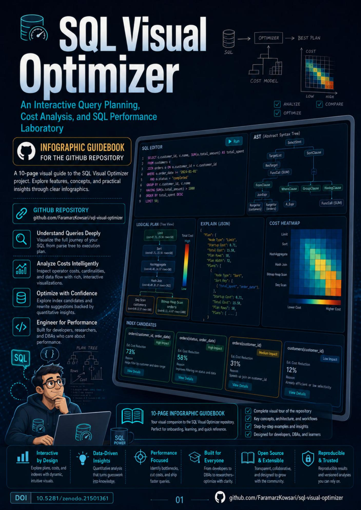

Cover and repository overview

Official GitHub repository guidebook
Inside SQL Visual Optimizer
A Visual Guide to Query Planning, Cost Analysis, and SQL Performance
This ten-page English infographic booklet presents the project from beginning to end: its purpose, features, workflow, live interface, repository architecture, deterministic analyzer, privacy model, optional BYOK AI, CI/CD deployment, research value, citation information, and author profile.
10 pagesA4 portraitEnglishFree PDFRepository companion
The repository explained in ten visual chapters
What SQL Visual Optimizer is
Core features
Application workflow
Interface deep dive
Repository architecture
Inside the deterministic analyzer
Privacy, BYOK AI, deployment, and CI/CD
Use cases, research value, and citation
Author and official profiles